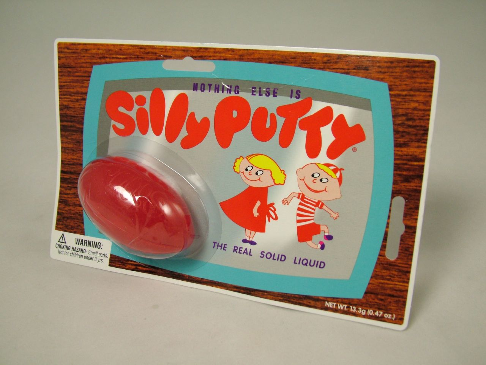

Our API is our product
Everything you'd ever want to know about
2 million artists including:
Everything you'd ever want to know about
30 million songs including:
Hundreds of Genres
Plus client libraries for popular programming lanaguages including Python, Java, Ruby, iOS, Android, Perl, etc.
for song in playlist.static(type='artist-radio', artist='weezer'):
print song.title, 'by', song.artist_name
Island In The Sun --- Weezer
1979 --- The Smashing Pumpkins
Walk --- Foo Fighters
Dance, Dance --- Fall Out Boy
Blast Off! --- Rivers Cuomo
Oh Me, Oh My --- Nerf Herder
Birdhouse in Your Soul --- They Might Be Giants
Smells Like Teen Spirit --- Nirvana
Alison --- Elvis Costello
Girl, You'll Be a Woman Soon --- Urge Overkill
Turns music into silly putty
The Ultimate Music Hacking tool
With remix you can chop sound into
And programatically manipulate all the bits and pieces
Create a remix from beat one of every bar
# one.py
audiofile = audio.LocalAudioFile('bad-romance.mp3')
beat_ones = []
for bar in audifile.analysis.bars:
beat_ones.append(bar.children()[0])
out = audio.getpieces(audiofile, beat_ones)
out.encode('beat-1-romance.mp3')
reverse a song, beat-by-beat
# reverse.py
audiofile = audio.LocalAudioFile('bad-romance.mp3')
beats = audifile.analysis.beats:
beats.reverse()
out = audio.getpieces(audiofile, beats)
out.encode('beat-reverse-romance.mp3')
By Paul Lamere/ @plamere